Blocks (36)
Building sets, deep-sea flora and functional blocks.
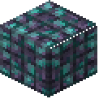
Abyssal Coral Block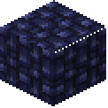
Abyssal Pearl Block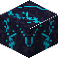
Abyssal Vent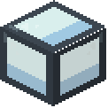
Aquarium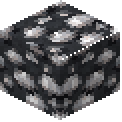
Barnacle Block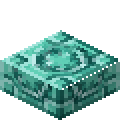
Chiseled Prismarine Tiles Slab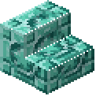
Chiseled Prismarine Tiles Stairs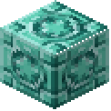
Chiseled Prismarine Tiles Wall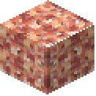
Crushed Coral Block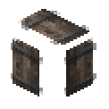
Driftwood Door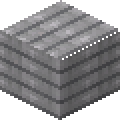
Driftwood Fence Gate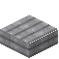
Driftwood Plank Slab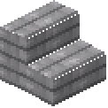
Driftwood Plank Stairs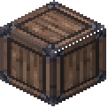
Driftwood Trapdoor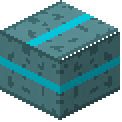
Giant Clam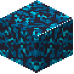
Glowing Plankton Block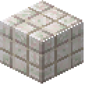
Pearl Block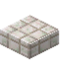
Pearl Block Slab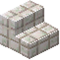
Pearl Block Stairs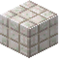
Pearl Block Wall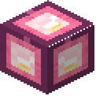
Pearl Lantern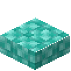
Polished Prismarine Bricks Slab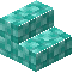
Polished Prismarine Bricks Stairs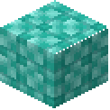
Polished Prismarine Bricks Wall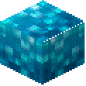
Prismarine Crystal Block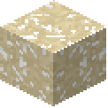
Salt Block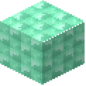
Sea Glass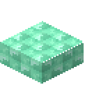
Sea Glass Slab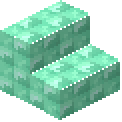
Sea Glass Stairs